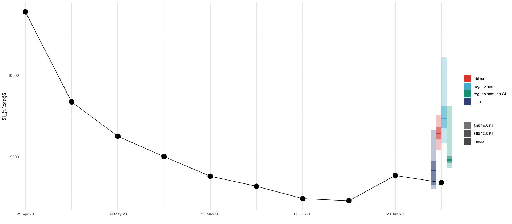
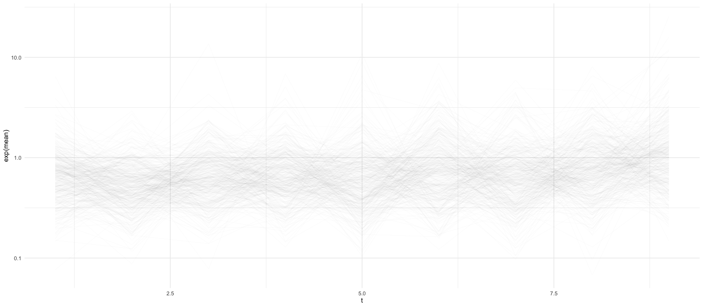
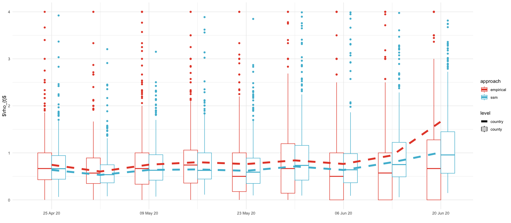
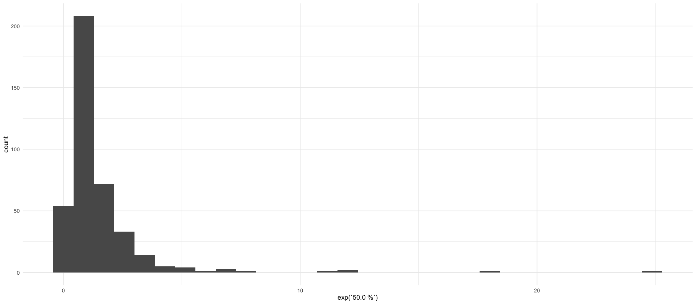
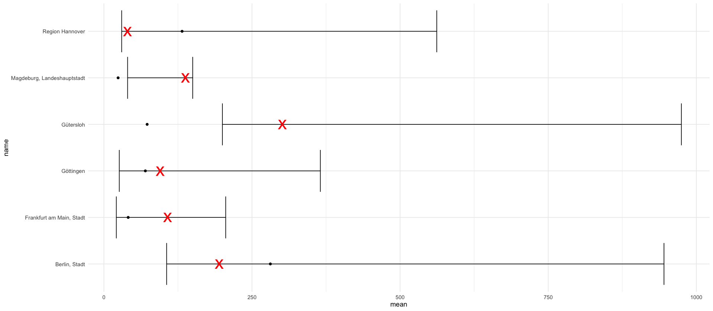
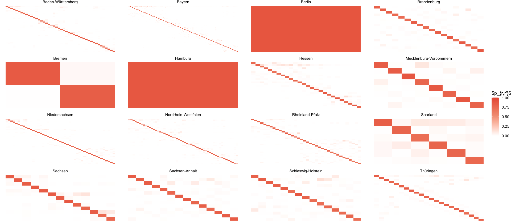
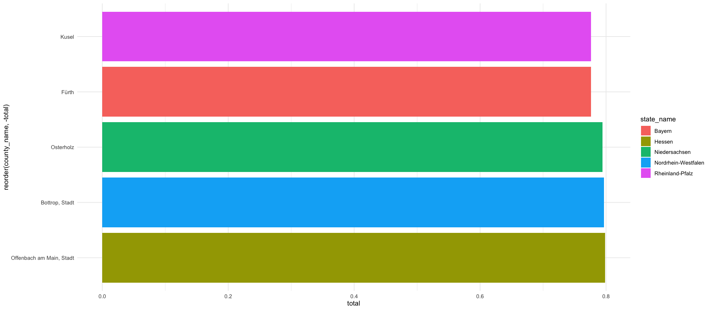
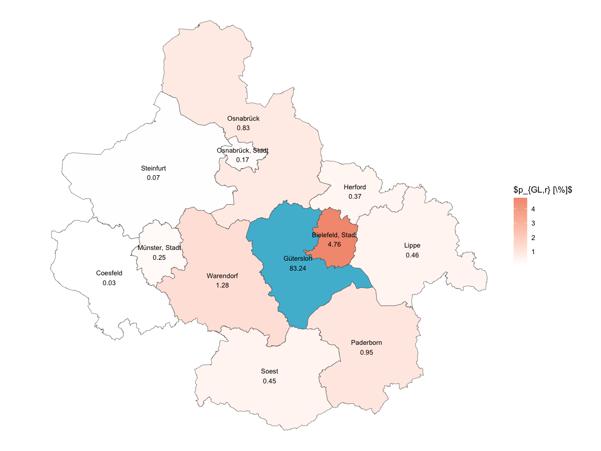
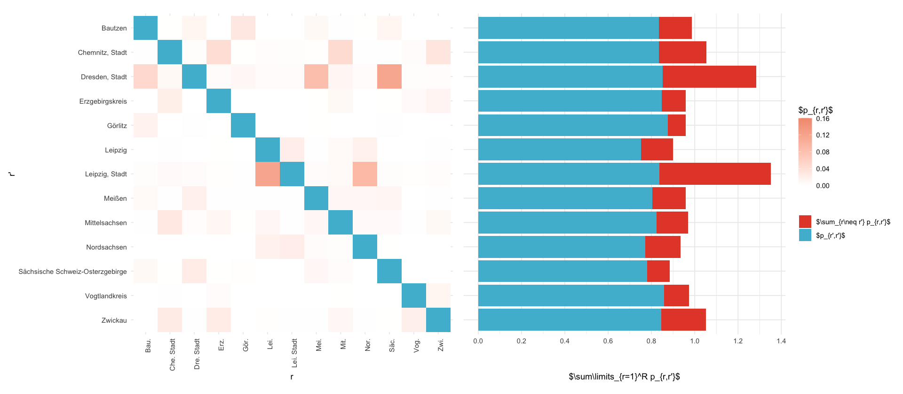
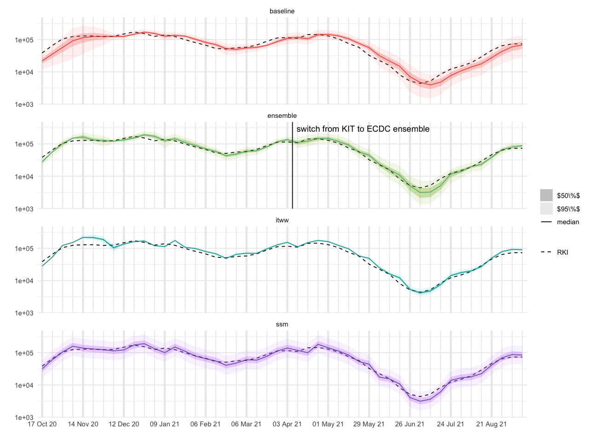

library(here)
source(here("setup.R"))
options(encoding = "UTF-8")
Sys.setlocale("LC_ALL", "C")here() starts at /Users/stefan/workspace/work/phd/thesis
'C/C/C/C/C/de_DE'
here() starts at /Users/stefan/workspace/work/phd/thesis
full_truth_county <- read_csv(here("data/processed/RKI_county_weekly.csv")) %>%
arrange(date, ags)
full_truth <- full_truth_county %>%
group_by(date) %>%
summarize(cases = sum(cases, na.rm = TRUE))
ags_county_dict <- read_csv(here("data/processed/ags_county_dict.csv")) %>%
arrange(ags) %>%
mutate(c = 1:n())rename_pct_to_decimal <- function(x) as.numeric(gsub("%", "", x)) / 100
y_total_dist <- y_total_result %>%
select(ends_with('%')) %>%
pivot_longer(cols = everything(), names_to = "percentile", values_to = "value") %>%
mutate(percentile = rename_pct_to_decimal(percentile)) %>%
bind_rows(tibble(value = c(0, Inf), percentile = c(0, 1))) %>%
arrange(value)prediction_date <- showcase_results %>% pull(date) %>% max
baseline_df <- full_truth %>%
filter(date <= prediction_date - 7, date >= prediction_date - 14)
growth_rate <- baseline_df %>%
pull(cases) %>%
log %>% diff %>% exp
lambda_old <- baseline_df %>%
pull(cases) %>%
tail(1)
lambda_new <- lambda_old * growth_rate
growth_rate
lambda_old
lambda_newbaseline_county <- full_truth_county %>% filter(date <= prediction_date - 7, date >= prediction_date - 14)
I_old_county <- baseline_county %>%
group_by(ags) %>%
summarize(cases = cases[2])
emp_rho_c <- baseline_county %>%
group_by(ags) %>%
summarize(growth_rate = exp(diff(log(cases))))
rho_c_cleaned <- emp_rho_c %>%
mutate(growth_rate = ifelse(is.na(growth_rate) | is.infinite(growth_rate), 1.0, growth_rate)) %>%
mutate(growth_rate = pmin(growth_rate, 3))
lambda_new_county <- rho_c_cleaned %>%
inner_join(I_old_county) %>%
mutate(intensity_prediction = growth_rate * cases) %>%
pull(intensity_prediction)Joining with `by = join_by(ags)`
total_nb_obs <- full_truth %>%
filter(date >= ymd('2020-04-25'), date<= prediction_date - 7) %>%
mutate(rho = cases / lag(cases)) %>%
mutate(predicted = lag(cases) * lag(rho)) %>%
tail(-2) %>%
dplyr::select(y = cases, mu = predicted)
est_r <- function(df) {
loglik <- function(r) -sum(dnbinom(df$y, mu = df$mu, size = r))
r_est <- optimize(loglik, interval=c(1e-3,1e3))$minimum
}
r_country <- est_r(total_nb_obs)
nb_quantiles <- qnbinom(y_total_dist$percentile, mu = lambda_new, size = r_country) %>%
tibble(
percentile = y_total_dist$percentile,
value = .
) %>%
pivot_wider(names_from = percentile, values_from = value) %>%
mutate(date = prediction_date)
nb_quantiles
r_country| 0 | 0.01 | 0.025 | 0.05 | 0.1 | 0.15 | 0.2 | 0.25 | 0.3 | 0.35 | ⋯ | 0.7 | 0.75 | 0.8 | 0.85 | 0.9 | 0.95 | 0.975 | 0.99 | 1 | date |
|---|---|---|---|---|---|---|---|---|---|---|---|---|---|---|---|---|---|---|---|---|
| <dbl> | <dbl> | <dbl> | <dbl> | <dbl> | <dbl> | <dbl> | <dbl> | <dbl> | <dbl> | ⋯ | <dbl> | <dbl> | <dbl> | <dbl> | <dbl> | <dbl> | <dbl> | <dbl> | <dbl> | <date> |
| 0 | 5250 | 5426 | 5581 | 5763 | 5888 | 5988 | 6076 | 6155 | 6228 | ⋯ | 6726 | 6810 | 6905 | 7017 | 7159 | 7373 | 7562 | 7786 | Inf | 2020-06-27 |
N_samples <- 1e5
total_county_nb_obs <- full_truth_county %>%
filter(date >= ymd('2020-04-25'), date<= prediction_date - 7) %>%
group_by(ags) %>%
mutate(rho = cases / lag(pmax(cases, 1))) %>%
mutate(predicted = pmax(lag(cases) * lag(rho), 1)) %>%
ungroup() %>%
filter(!is.na(predicted)) %>%
dplyr::select(ags, y = cases, mu = predicted)
county_rs <- total_county_nb_obs %>%
group_by(ags) %>%
summarize(r = est_r(cur_data())) %>%
mutate(mu = lambda_new_county)
nbinom_county_samples <- rnbinom(N_samples * 400, mu = county_rs$mu, size = county_rs$r) %>%
matrix(c(400, N_samples))
nb_county_quantiles <- nbinom_county_samples %>%
pmin(population$population) %>%
colSums %>%
quantile(probs = y_total_dist$percentile) %>%
tibble(
percentile = y_total_dist$percentile,
value = .
) %>%
pivot_wider(names_from = percentile, values_from = value) %>%
mutate(date = prediction_date)
nb_county_quantiles_no_GL <- nbinom_county_samples[-99,] %>%
colSums %>%
quantile(probs = y_total_dist$percentile) %>%
tibble(
percentile = y_total_dist$percentile,
value = .
) %>%
pivot_wider(names_from = percentile, values_from = value) %>%
mutate(date = prediction_date)Warning message: "There was 1 warning in `summarize()`. i In argument: `r = est_r(cur_data())`. i In group 1: `ags = "01001"`. Caused by warning: ! `cur_data()` was deprecated in dplyr 1.1.0. i Please use `pick()` instead."
| 0 | 0.01 | 0.025 | 0.05 | 0.1 | 0.15 | 0.2 | 0.25 | 0.3 | 0.35 | ⋯ | 0.7 | 0.75 | 0.8 | 0.85 | 0.9 | 0.95 | 0.975 | 0.99 | 1 | date |
|---|---|---|---|---|---|---|---|---|---|---|---|---|---|---|---|---|---|---|---|---|
| <dbl> | <dbl> | <dbl> | <dbl> | <dbl> | <dbl> | <dbl> | <dbl> | <dbl> | <dbl> | ⋯ | <dbl> | <dbl> | <dbl> | <dbl> | <dbl> | <dbl> | <dbl> | <dbl> | <dbl> | <date> |
| 4759 | 5611.99 | 5829 | 6035 | 6282 | 6465 | 6619 | 6759 | 6888 | 7011 | ⋯ | 7957 | 8139 | 8358 | 8631 | 9018 | 9778 | 11061.02 | 16065.13 | 249228 | 2020-06-27 |
tikz/regional_showcase_predictions.tex| variable | c | t | mean | sd | 1.0 % | 2.5 % | 5.0 % | 10.0 % | 15.0 % | ⋯ | 65.0 % | 70.0 % | 75.0 % | 80.0 % | 85.0 % | 90.0 % | 95.0 % | 97.5 % | 99.0 % | date |
|---|---|---|---|---|---|---|---|---|---|---|---|---|---|---|---|---|---|---|---|---|
| <chr> | <dbl> | <dbl> | <dbl> | <dbl> | <dbl> | <dbl> | <dbl> | <dbl> | <dbl> | ⋯ | <dbl> | <dbl> | <dbl> | <dbl> | <dbl> | <dbl> | <dbl> | <dbl> | <dbl> | <date> |
| y_total | 0 | 10 | 4170.382 | 666.6667 | 2261.53 | 2842.372 | 3605.151 | 3605.479 | 3605.806 | ⋯ | 4721.306 | 4721.794 | 4722.282 | 4722.769 | 4723.257 | 4723.745 | 5012.9 | 5277.69 | 5281.091 | 2020-06-27 |
dx <- .4
alpha_fct <- factor(c("median", "$50 \\%$ PI", "$95 \\%$ PI"), levels=c("median", "$50 \\%$ PI", "$95 \\%$ PI"))
col = pal_npg("nrc")(10)[3]
geom_prediction_interval <- function(model, data, dx=1, offset=0) {
list(
geom_rect(aes(xmin = date - dx + offset, xmax= date+dx + offset, ymin = `0.025`, ymax = `0.975`, alpha=alpha_fct[3], fill=model), data=data),
geom_rect(aes(xmin = date - dx + offset, xmax= date+dx + offset, ymin = `0.25`, ymax = `0.75`, alpha=alpha_fct[2], fill=model), data=data),
geom_rect(aes(xmin= date - dx + offset, xmax=date + dx + offset, ymin = `0.5`-30, ymax=`0.5`+30, alpha=alpha_fct[1], fill=model), data=data)
)
}
y_result_plot <- y_total_result %>%
rename_with(function(x) as.character(rename_pct_to_decimal(x)), ends_with('%'))
full_truth %>%
inner_join(y_result_plot, by=c("date"="date")) %>%
ggplot(aes()) +
geom_prediction_interval("ssm", data=y_result_plot, dx=dx, offset=-2*dx) +
geom_prediction_interval("nbinom", data=nb_quantiles, dx=dx,offset=-2*dx) +
geom_prediction_interval("reg. nbinom", data=nb_county_quantiles, dx=dx, offset=0*dx) +
geom_prediction_interval("reg. nbinom, no GL", data=nb_county_quantiles_no_GL, dx=dx, offset=2*dx) +
geom_line(aes(date, cases), data= full_truth %>% filter(date >= ymd('2020-04-25'), date <= ymd('2020-06-27'))) +
geom_point(aes(date, cases), data= full_truth %>% filter(date >= ymd('2020-04-25'), date <= ymd('2020-06-27')), size=5) +
scale_alpha_manual(name="", values=c("median"=1, "$50 \\%$ PI"=0.5, "$95 \\%$ PI"=0.3)) +
labs(x="", y="$I_{t, \\cdot}$", fill="") +
scale_x_date(
breaks = function(x) seq(ceiling_date(x[1], "week", week_start = 6), floor_date(x[2], "week", week_start = 6), by = "2 week"),
date_labels = "%d %b %y",
expand = expansion(mult = c(0.01, 0.01))
) +
theme(
panel.grid.major.x = element_line(linewidth = 1.2),
panel.grid.minor.x = element_line(linewidth = 0.5)
) +
scale_fill_npg()
ggsave_tikz(here("tikz/regional_showcase_prediction.tex"), width=16/1.5, height=7/1.5)
tables/regional_showcase_theta.texparameters <- read_csv(here("data/results/4_local_outbreak_model/estimated_parameters.csv"), col_names = c("parameter", "value")) %>%
pivot_wider(names_from = parameter, values_from = value) %>%
rename(
"$\\alpha$" = alpha,
"$\\sigma_{\\overline{\\log \\rho}}$" = sigma_r,
"$\\sigma_{S}$" = "sigma spatial",
"$\\bar{q}$" = q,
"$C$" = C,
"$r$" = r
) %>%
pivot_longer(everything(), names_to="parameter", values_to="estimate")
parameters %>%
kable(format = "latex", digits=3, booktabs=T, escape=F) %>%
cat(., file=here("tables/regional_showcase_theta.tex"))log_rhos <- showcase_results %>%
filter(str_starts(variable, "log_rho_")) %>%
# extract both indices from variable names like log_rho_2_1
mutate(c = as.numeric(str_extract(variable, "log_rho_(\\d+)_(\\d+)", group=1))) %>%
mutate(t = as.numeric(str_extract(variable, "log_rho_(\\d+)_(\\d+)", group=2)))
log_rhos %>%
head()
log_rhos %>%
mutate(c = factor(c)) %>%
ggplot(aes(t, exp(mean), group=c)) +
geom_line(show.legend=FALSE, alpha=1/100) +
xlim(NA, 9) +
scale_y_log10()| variable | c | t | mean | sd | 1.0 % | 2.5 % | 5.0 % | 10.0 % | 15.0 % | ⋯ | 65.0 % | 70.0 % | 75.0 % | 80.0 % | 85.0 % | 90.0 % | 95.0 % | 97.5 % | 99.0 % | date |
|---|---|---|---|---|---|---|---|---|---|---|---|---|---|---|---|---|---|---|---|---|
| <chr> | <dbl> | <dbl> | <dbl> | <dbl> | <dbl> | <dbl> | <dbl> | <dbl> | <dbl> | ⋯ | <dbl> | <dbl> | <dbl> | <dbl> | <dbl> | <dbl> | <dbl> | <dbl> | <dbl> | <date> |
| log_rho_1_1 | 1 | 1 | -1.2163769 | 0.1598178 | -1.68070449 | -1.38564169 | -1.38209844 | -1.23059352 | -1.2302142 | ⋯ | -1.2264477 | -1.2263806 | -1.2263136 | -1.2262465 | -1.2261794 | -1.2261123 | -0.9170889 | -0.6766719 | -0.6762008 | 2020-04-25 |
| log_rho_2_1 | 2 | 1 | 0.5549448 | 0.2022438 | 0.01482255 | 0.01658301 | 0.01830238 | 0.07906171 | 0.6228041 | ⋯ | 0.6312126 | 0.6315221 | 0.6318316 | 0.6321411 | 0.6324505 | 0.6327600 | 0.6330695 | 0.6332242 | 0.6333171 | 2020-04-25 |
| log_rho_3_1 | 3 | 1 | -1.2193435 | 0.1411181 | -1.73760412 | -1.73510571 | -1.73333119 | -1.39045531 | -1.1816277 | ⋯ | -1.1714910 | -1.1714093 | -1.1713275 | -1.1712457 | -1.1711639 | -1.1710822 | -1.1710004 | -1.1709595 | -1.1709350 | 2020-04-25 |
| log_rho_4_1 | 4 | 1 | 0.3627378 | 0.1114700 | -0.40008267 | 0.28558075 | 0.28945849 | 0.37452239 | 0.3799041 | ⋯ | 0.3847352 | 0.3848608 | 0.3849863 | 0.3851119 | 0.3852374 | 0.3853630 | 0.3854885 | 0.3855513 | 0.3855889 | 2020-04-25 |
| log_rho_5_1 | 5 | 1 | -1.6572183 | 0.5181756 | -3.50727209 | -3.49655451 | -3.47869189 | -2.22266098 | -1.5013308 | ⋯ | -1.4963833 | -1.4962190 | -1.4960547 | -1.4958903 | -1.4957260 | -1.4955616 | -1.4953973 | -1.4953151 | -0.9410035 | 2020-04-25 |
| log_rho_6_1 | 6 | 1 | -0.2124819 | 0.1065888 | -0.54829519 | -0.54787938 | -0.54719614 | -0.36253192 | -0.1835588 | ⋯ | -0.1812240 | -0.1811594 | -0.1810947 | -0.1810301 | -0.1809654 | -0.1809007 | -0.1808361 | -0.1808037 | -0.1807844 | 2020-04-25 |
Warning message: "Removed 400 rows containing missing values or values outside the scale range (`geom_line()`)."

approaches <- factor(c("ssm", "empirical"), levels = c("ssm", "empirical"))
ssm_app <- approaches[1]
empirical_app <- approaches[2]
emp_rho_plt <- full_truth_county %>%
filter(date >= ymd('2020-04-18'), date<= prediction_date - 7) %>%
group_by(ags) %>%
mutate(rho = cases / lag(pmax(cases, 1))) %>%
filter(!is.na(rho))
showcase_results %>%
filter(variable == "log_rho") %>%
ggplot(aes(date, exp(`50.0 %`), color=ssm_app)) +
geom_boxplot(aes(date-1, rho, color=empirical_app, group = date, linetype='county'), data = emp_rho_plt, width=2) +
geom_boxplot(aes(date+1, group = date, color=ssm_app, linetype='county'), data = log_rhos, width=2) +
geom_line(aes(linetype='country'), linewidth=2) +
geom_line(data = full_truth %>% mutate(rho = cases / lag(cases)), aes(date, rho, color=empirical_app, linetype='country'), linewidth=2) +
ylim(0,4) +
scale_x_date(
breaks = function(x) seq(ceiling_date(x[1], "week", week_start = 6), floor_date(x[2], "week", week_start = 6), by = "2 week"),
date_labels = "%d %b %y",
expand = expansion(mult = c(0.01, 0.01)),
limits = c(ymd('2020-04-20'), ymd('2020-06-24'))
) +
labs(color="approach", linetype='level', x="", y="$\\rho_{t}$") +
scale_linetype_manual(values = c('county'='solid', 'country'='dashed'))
ggsave_tikz(here("tikz/regional_showcase_rho.tex"), width=16/1.5, height=7/1.5)Warning message: "Removed 97 rows containing non-finite outside the scale range (`stat_boxplot()`)." Warning message: "Removed 400 rows containing missing values or values outside the scale range (`stat_boxplot()`)." Warning message: "Removed 49 rows containing non-finite outside the scale range (`stat_boxplot()`)." Warning message: "Removed 1 row containing missing values or values outside the scale range (`geom_line()`)." Warning message: "Removed 166 rows containing missing values or values outside the scale range (`geom_line()`)." Warning message: "Removed 97 rows containing non-finite outside the scale range (`stat_boxplot()`)." Warning message: "Removed 400 rows containing missing values or values outside the scale range (`stat_boxplot()`)." Warning message: "Removed 49 rows containing non-finite outside the scale range (`stat_boxplot()`)." Warning message: "Removed 1 row containing missing values or values outside the scale range (`geom_line()`)." Warning message: "Removed 166 rows containing missing values or values outside the scale range (`geom_line()`)."

Joining with `by = join_by(c)`
| 50.0 % | cases | mu |
|---|---|---|
| <dbl> | <dbl> | <dbl> |
| 0.22141410 | 27 | 33.69168 |
| 0.13619816 | 27 | 30.93954 |
| 0.81227614 | 135 | 304.15910 |
| 0.16651360 | 77 | 90.95083 |
| -0.19824822 | 28 | 22.96465 |
| -0.46848131 | 43 | 26.91594 |
| 0.42210002 | 96 | 146.41546 |
| 0.21066202 | 82 | 101.22859 |
| 0.26134013 | 28 | 36.36274 |
| 0.51631338 | 23 | 38.54428 |
| 1.30123256 | 29 | 106.54084 |
| -0.37364730 | 24 | 16.51727 |
| 0.09001093 | 38 | 41.57908 |
| 0.82648694 | 24 | 54.84663 |
| 0.56741722 | 31 | 54.67488 |
| 2.46741720 | 193 | 2275.84658 |
| 2.48864543 | 856 | 10310.47665 |
| 0.38797962 | 54 | 79.59599 |
| 1.17074579 | 26 | 83.83431 |
| 1.32054362 | 29 | 108.61825 |
| 0.88694198 | 37 | 89.82469 |
| -0.04494725 | 52 | 49.71449 |
| 1.00240337 | 31 | 84.46950 |
| 0.62712586 | 23 | 43.06110 |
| 0.02060513 | 27 | 27.56211 |
| -0.56278372 | 22 | 12.53167 |
| 0.90301542 | 21 | 51.80765 |
| 0.26862714 | 57 | 74.56554 |
| 0.17735707 | 22 | 26.26926 |
| 0.74328202 | 536 | 1127.11458 |
| 3.21901521 | 27 | 675.09409 |
| 0.96394301 | 84 | 220.24924 |
`stat_bin()` using `bins = 30`. Pick better value with `binwidth`.

showcase_results %>%
filter(str_starts(variable, "y_total_")) %>%
mutate(c = as.numeric(str_extract(variable, "y_total_(\\d+)", group=1))) %>%
inner_join(mutate(ags_county_dict, c=1:400), by = "c") %>%
inner_join(filter(full_truth_county, date == '2020-06-13'), by=c("ags")) %>%
filter(mean >= 100) %>%
arrange(desc(mean)) %>%
ggplot(aes(y = name, x = mean)) +
geom_errorbarh(aes(xmin = `2.5 %`, xmax = `97.5 %`)) +
geom_point(aes(x = `50.0 %`), pch='x', color='red', size=10) +
geom_point(aes(x = cases))
ags_county_dict <- read_csv(here("data/processed/ags_county_dict.csv"))
ags_state_dict <- read_csv(here("data/processed/ags_state_dict.csv"))
index_to_state <- ags_county_dict %>%
mutate(i = 1:400) %>%
mutate(state_ags = str_sub(ags, end=2)) %>%
rename(county_name = name) %>%
inner_join(ags_state_dict, by=c("state_ags"="ags")) %>%
select(i, state_ags, county_name, state_name = name)P <- read_delim(here("data/results/4_local_outbreak_model/showcase_P_matrix.csv"), delim = " ", col_names = 1:400) %>%
as.matrix()
colnames(P) <- NULL
P_long_states <- melt(P) %>%
rename(i = Var1, j = Var2) %>%
inner_join(select(index_to_state, i, state_name_i = state_name), by=c("i")) %>%
inner_join(select(index_to_state, j=i, state_name_j = state_name), by=c("j"))
P_long_states %>%
filter(state_name_i == state_name_j) %>%
ggplot(aes(i,-j, fill=value)) +
geom_tile() +
scale_fill_gradient2(
low = "white",
mid = pal_npg("nrc")(5)[5],
high = pal_npg("nrc")(5)[1],
midpoint = 0.55, # Set midpoint where you want emphasis
limits = c(0,1)
) +
facet_wrap(~state_name_i, scales="free") +
theme_void() +
labs(fill= "$p_{r,r'}$")
ggsave_tikz(here("tikz/P_matrix.tex"))

`stat_bin()` using `bins = 30`. Pick better value with `binwidth`.

saxony_ags <- ags_state_dict %>%
filter(name == "Sachsen") %>%
pull(ags)
saxony_counties <- ags_county_dict %>%
mutate(i = 1:400) %>%
filter(str_starts(ags, saxony_ags)) %>%
rename(county_name = name) %>%
select(i, county_name)
P_saxony <- melt(P) %>%
rename(i = Var1, j = Var2) %>%
inner_join(select(saxony_counties, i, county_name_i = county_name), by=c("i")) %>%
inner_join(select(saxony_counties, j=i, county_name_j = county_name), by=c("j"))
p_rr <- P_saxony %>%
filter(i == j) %>%
mutate(county_name_i_short = county_shorthand(county_name_i))
plt_saxony <- P_saxony %>%
#mutate(value = ifelse(value < 0.01, NA, value)) %>%
mutate(value = ifelse(i==j, NA, value)) %>%
mutate(county_name_i_short = county_shorthand(county_name_i)) %>%
ggplot() +
geom_tile(aes(county_name_i_short,county_name_j, fill=value)) +
scale_fill_gradient(
low = "white",
high = pal_npg("nrc")(10)[5],
na.value = "white",
limits = c(0, 0.16)
) +
geom_tile(aes(county_name_i_short,county_name_j), fill=pal_npg("nrc")(2)[2], data=p_rr) +
scale_y_discrete(limits=rev) +
theme_minimal() +
labs(fill= "$p_{r,r'}$", x="r", y="r'") +
theme(
axis.text.x = element_text(angle=90, hjust=1)
) +
coord_fixed()
plt_marg_right <- melt(P) %>%
rename(i = Var1, j = Var2) %>%
inner_join(select(saxony_counties, j=i, county_name_j = county_name), by=c("j")) %>%
group_by(county_name_j) %>%
summarize(value = sum(value)) %>%
ggplot(aes(county_name_j, value)) +
geom_bar(stat="identity", aes(fill = "$\\sum_{r\\neq r'} p_{r,r'}$")) +
geom_bar(data=p_rr, aes(county_name_j, value, fill="$p_{r',r'}$"), stat="identity")+
theme_minimal() +
scale_x_discrete(limits=rev)+
scale_y_continuous(breaks = seq(0,1.5, .2)) +
coord_flip() +
labs(x="", y="$\\sum\\limits_{r=1}^R p_{r,r'}$", fill = "")+
theme(
axis.text.y = element_blank(),
axis.ticks.y = element_blank(),
axis.title.y = element_blank()
) +
scale_fill_npg()
((plt_saxony | plt_marg_right)) + plot_layout(guides = "collect", axes = "collect_y")
ggsave_tikz(here('tikz/P_matrix_saxony.tex'), width=16/1.5, height=9/1.5)Warning message in (function (texString, cex = 1, face = 1, engine = getOption("tikzDefaultEngine"), :
“Attempting to calculate the width of a Unicode stringusing the pdftex engine. This may fail! See the Unicodesection of ?tikzDevice for more information.”
Warning message in (function (texString, cex = 1, face = 1, engine = getOption("tikzDefaultEngine"), :
“Attempting to calculate the width of a Unicode stringusing the pdftex engine. This may fail! See the Unicodesection of ?tikzDevice for more information.”
Warning message in (function (texString, cex = 1, face = 1, engine = getOption("tikzDefaultEngine"), :
“Attempting to calculate the width of a Unicode stringusing the pdftex engine. This may fail! See the Unicodesection of ?tikzDevice for more information.”
Warning message in (function (texString, cex = 1, face = 1, engine = getOption("tikzDefaultEngine"), :
“Attempting to calculate the width of a Unicode stringusing the pdftex engine. This may fail! See the Unicodesection of ?tikzDevice for more information.”
Warning message in (function (texString, cex = 1, face = 1, engine = getOption("tikzDefaultEngine"), :
“Attempting to calculate the width of a Unicode stringusing the pdftex engine. This may fail! See the Unicodesection of ?tikzDevice for more information.”
Warning message in (function (texString, cex = 1, face = 1, engine = getOption("tikzDefaultEngine"), :
“Attempting to calculate the width of a Unicode stringusing the pdftex engine. This may fail! See the Unicodesection of ?tikzDevice for more information.”
Warning message in (function (texString, cex = 1, face = 1, engine = getOption("tikzDefaultEngine"), :
“Attempting to calculate the width of a Unicode stringusing the pdftex engine. This may fail! See the Unicodesection of ?tikzDevice for more information.”
Warning message in (function (texString, cex = 1, face = 1, engine = getOption("tikzDefaultEngine"), :
“Attempting to calculate the width of a Unicode stringusing the pdftex engine. This may fail! See the Unicodesection of ?tikzDevice for more information.”
Warning message in (function (texString, cex = 1, face = 1, engine = getOption("tikzDefaultEngine"), :
“Attempting to calculate the width of a Unicode stringusing the pdftex engine. This may fail! See the Unicodesection of ?tikzDevice for more information.”
Warning message in (function (texString, cex = 1, face = 1, engine = getOption("tikzDefaultEngine"), :
“Attempting to calculate the width of a Unicode stringusing the pdftex engine. This may fail! See the Unicodesection of ?tikzDevice for more information.”
qs <- y_total_dist$percentile[c(-1, -length(y_total_dist$percentile))]
wis_county <- nbinom_county_samples %>%
apply(1, quantile, probs = qs) %>%
rbind(
full_truth_county %>%
filter(date == prediction_date) %>%
arrange(ags) %>%
pull(cases),
.
) %>%
apply(2, function(x) WIS_decompose(qs, x[-1], x[1])$wis)
mean(wis_county)
showcase_results %>%
filter(str_starts(variable, "y_total_")) %>%
mutate(c = as.numeric(str_extract(variable, "y_total_(\\d+)", group=1))) %>%
inner_join(mutate(ags_county_dict, c=1:400), by = "c") %>%
inner_join(filter(full_truth_county, date == prediction_date), by=c("ags")) %>%
rowwise() %>%
mutate(
wis = WIS_decompose(
prob=qs,
quant=c(`1.0 %`, `2.5 %`, `5.0 %`, `10.0 %`, `15.0 %`, `20.0 %`, `25.0 %`, `30.0 %`, `35.0 %`, `40.0 %`, `45.0 %`, `50.0 %`, `55.0 %`, `60.0 %`, `65.0 %`, `70.0 %`, `75.0 %`, `80.0 %`, `85.0 %`, `90.0 %`, `95.0 %`, `97.5 %`, `99.0 %`),
actual= cases
)$wis
) %>%
pull(wis) %>%
mean()forecasts_directory <- here("data/results/4_local_outbreak_model")
df_forecasts <- list.files(forecasts_directory, pattern="forecasts_.*.csv", full.names = TRUE) %>%
# infer the forecast date from the filename - have to add 10 weeks to the date in the filename as it is the initial date
lapply(function(file) read_csv(file) %>% mutate(date = ymd(str_extract(string = file, pattern = "\\d{4}-\\d{2}-\\d{2}")) + days(10 * 7))) %>%
bind_rows(.)df_baseline <- read_csv(here("data/processed/KIT_FCH_KIT-baseline.csv")) %>%
filter(date <= max(df_forecasts$date), date >= min(df_forecasts$date))
df_itww <- read_csv(here("data/processed/KIT_FCH_ITWW-county_repro.csv")) %>%
filter(date <= max(df_forecasts$date), date >= min(df_forecasts$date))
df_ensemble_kit <- read_csv(here("data/processed/KIT_FCH_KITCOVIDhub-median_ensemble.csv")) %>%
filter(date <= max(df_forecasts$date), date >= min(df_forecasts$date))
df_ensemble_ecdc <- read_csv(here("data/processed/ECDC_FCH_EuroCOVIDhub-ensemble.csv")) %>%
filter(date <= max(df_forecasts$date), date >= min(df_forecasts$date))all_df <- rbind(
df_forecasts %>% filter(variable == 'y_total') %>% select(df_baseline %>% names) %>% mutate(model='ssm'),
df_baseline %>% mutate(model='baseline'),
df_itww %>% mutate(model='itww'),
df_ensemble %>% mutate(model='ensemble')
) %>%
filter(date <= ymd('2021-09-15'), date >= ymd('2020-10-12'))tikz/regional_forecasts_comparison.tex# larger figures
options(
repr.plot.width=16/1.5,
repr.plot.height=12/1.5
)
kit_ecdc_switch <- tibble(
model="ensemble",
last_date=last_date_KIT + 3.5,
text="switch from KIT to ECDC ensemble"
)
ggplot(all_df, aes(date)) +
geom_line(aes(y=`50.0 %`, color=model, alpha="median")) +
geom_line(aes(x = date, y = cases, linetype = "RKI"), data = filter(full_truth, date <= max(all_df$date), date >= min(all_df$date))) +
geom_ribbon(aes(ymin = `25.0 %`, ymax = `75.0 %`, fill = model, alpha="$50\\%$")) +
geom_ribbon(aes(ymin = `2.5 %`, ymax = `97.5 %`, fill = model, alpha="$95\\%$")) +
geom_vline(data=kit_ecdc_switch, aes(xintercept=last_date), linetype=1) +
geom_text(data=kit_ecdc_switch, aes(x = last_date + 48.5, y=3e5, label=text)) +
labs(x = "", y = "", linetype = NULL, fill = NULL, alpha="") +
guides(fill="none", color="none") +
scale_x_four_weekly(week_start = 6) +
scale_linetype_manual(values=c("RKI" = 2))+
scale_alpha_manual(values = c("median" = 1, "$50\\%$" = 0.3, "$95\\%$" = 0.1)) +
facet_wrap(~model, ncol = 1) +
scale_y_log10()
ggsave_tikz(
here("tikz/regional_forecasts_comparison.tex"),
width=16/1.5, height=12/1.5
)
tables/regional_forecasts_combined_performance.texquantiles <- c(0.01, 0.025, 0.05, 0.10, 0.15, 0.2, 0.25, 0.3, 0.35, 0.45, 0.5, 0.55, 0.6, 0.65, 0.70, 0.75, 0.80, 0.85, 0.90, 0.95, 0.975, 0.99)
compute_relative_performance <- function(truth) {
truth %>%
inner_join(all_df, by="date") %>%
rename(truth=cases) %>%
rowwise() %>%
mutate(
WIS_decompose = list(WIS_decompose(
prob=quantiles,
quant=c(`1.0 %`, `2.5 %`, `5.0 %`, `10.0 %`, `15.0 %`, `20.0 %`, `25.0 %`, `30.0 %`, `35.0 %`, `40.0 %`, `45.0 %`, `50.0 %`, `55.0 %`, `60.0 %`, `65.0 %`, `70.0 %`, `75.0 %`, `80.0 %`, `85.0 %`, `90.0 %`, `95.0 %`, `97.5 %`, `99.0 %`),
actual= truth
))
) %>%
unnest_wider(WIS_decompose) %>%
group_by(model) %>%
summarize(
mae = mean(abs(`50.0 %` - truth), na.rm = TRUE),
WIS = mean(wis),
sharpness = mean(sharpness),
underprediction = mean(underprediction),
overprediction = mean(overprediction),
mean_error = mean(mean_error),
length_95 = mean(`97.5 %` - `2.5 %`, na.rm = TRUE),
length_50 = mean(`75.0 %` - `25.0 %`, na.rm = TRUE),
coverage_50 = mean(`25.0 %` <= truth & truth <= `75.0 %`, na.rm = TRUE),
coverage_95 = mean(`2.5 %` <= truth & truth <= `97.5 %`, na.rm = TRUE),
)
}
df_table_performance <- compute_relative_performance(full_truth) %>%
mutate(coverage_50 = coverage_50 * 100) %>%
mutate(coverage_95 = coverage_95 * 100) %>%
rename(
`MAE` = mae,
`WIS` = WIS,
`sharpness` = sharpness,
`underprediction` = underprediction,
`overprediction` = overprediction,
`rescaled MAE` = mean_error,
`coverage 50% PI [%]` = coverage_50,
`coverage 95% PI [%]` = coverage_95,
) %>%
select(-length_95, -length_50) %>%
t() %>% # Transpose
as.data.frame() %>% # Convert to data frame
rownames_to_column(var = "metric") %>%
setNames(c("metric", .[1,2:5])) %>%
slice(-1)library(kableExtra)
# Add baseline column to relative metrics (filled with 1.000)
df_table_relative_performance$baseline <- 1.000
# Reorder columns to match the absolute table structure
df_table_relative_performance <- df_table_relative_performance[, c("metric", "baseline", "ensemble", "itww", "ssm")]
# Combine the datasets
combined_table <- rbind(df_table_performance, df_table_relative_performance)
# Create the combined table with section headers
combined_table %>%
# round to two digits
mutate(across(baseline:ssm, format_latex)) %>%
# add thousands separator in latex
kable(format="latex", digits=1, booktabs=T, escape=T, align = c("l", "r", "r", "r", "r")) %>%
#pack_rows("absolute performance", 1, nrow(df_table_performance) - 2) %>%
pack_rows("WIS components", nrow(df_table_performance) - 5, nrow(df_table_performance)) %>%
pack_rows("coverage", nrow(df_table_performance) - 1, nrow(df_table_performance)) %>%
pack_rows("relative to baseline", nrow(df_table_performance) + 1, nrow(combined_table)) %>%
cat(., file=here("tables/regional_forecasts_combined_metrics.tex"))| metric | baseline | ensemble | itww | ssm |
|---|---|---|---|---|
| <chr> | <chr> | <chr> | <chr> | <chr> |
| MAE | 14654.00 | 9750.84 | 16531.37 | 10149.94 |
| WIS | 8707.215 | 5595.531 | 12708.904 | 6795.430 |
| sharpness | 3023.821 | 2459.093 | 890.011 | 5074.880 |
| underprediction | 3239.0455 | 776.0869 | 1293.9369 | 832.6676 |
| overprediction | 1753.8314 | 1934.3247 | 9789.5615 | 448.6346 |
| rescaled MAE | 690.5170 | 426.0267 | 735.3950 | 439.2476 |
| coverage 50% PI [%] | 37.50 | 43.75 | 18.75 | 75.00 |
| coverage 95% PI [%] | 91.66667 | 91.66667 | 41.66667 | 100.00000 |
| MAE | 1 | 0.665404667667531 | 1.1281131431691 | 0.692639552340658 |
| WIS | 1 | 0.642631541773116 | 1.45958311584129 | 0.780436683830593 |